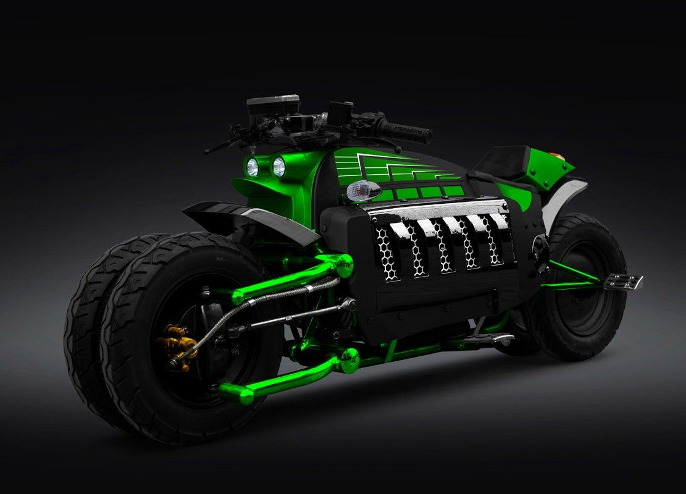
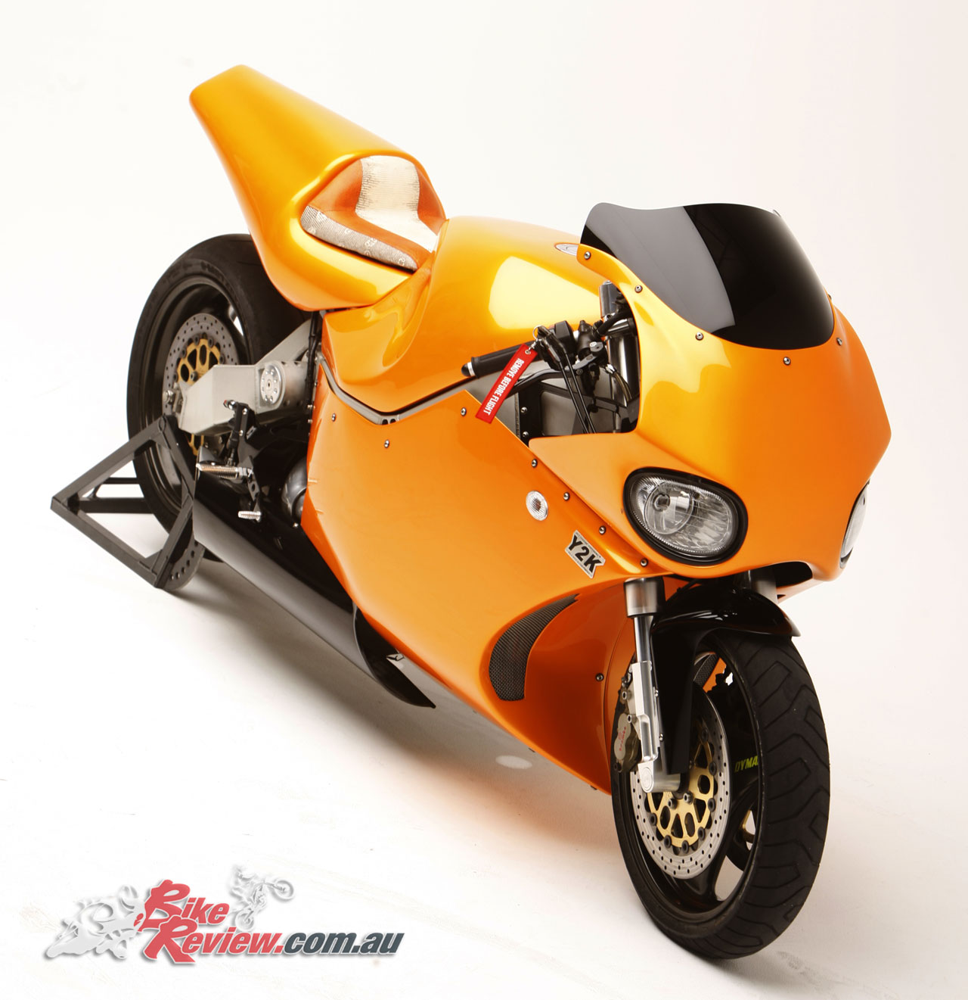

Motorcyclist" redirects here. For the US motorcycling magazine, see Motorcyclist (magazine).
Motorcycling is riding a motorcycle. For some people, motorcycling may be the only affordable form of individual motorized transportation, and small-displacement motorcycles are the most common motor vehicle in the most populous countries, including India, China and Indonesia.[1][2][3][4] In developing countries, motorcycles are overwhelmingly utilitarian due to lower prices and greater fuel economy. Of all motorcycles, 58% are in the Asia Pacific and Southern and Eastern Asia regions, excluding car-centric Japan. Motorcycles are mainly a luxury good in developed nations, where they are used mostly for recreation, as a lifestyle accessory or a symbol of personal identity. Beyond being a mode of motor transportation or sport, motorcycling has become a subculture and lifestyle. Although mainly a solo activity, motorcycling can be social and motorcyclists tend to have a sense of community with each other.[5]
Reasons for riding a motorcycle A motorcyclist For most riders, a motorcycle is a cheaper and more convenient form of transportation which causes less commuter congestion within cities and has less environmental impact than automobile ownership. Others ride as a way to relieve stress and to "clear their minds" as described in Robert M. Pirsig's book Zen and the Art of Motorcycle Maintenance. Pirsig contrasted the sense of connection experienced by motorcyclists with the isolation of drivers who are "always in a compartment", passively observing the passing landscape. Pirsig portrayed motorcycling as being in "completely in contact with it all... in the scene."[7] The connection to one's motorcycle is sensed further, as Pirsig explained, by the frequent need to maintain its mechanical operation. Pirsig felt that connection deepen when faced with a difficult mechanical problem that required walking away from it until the solution became clear. Similarly, motorcyclists experience pleasure at the feeling of being far more connected to their motor vehicles than in a motorcar, as being part of it rather than in it
Learn moreOverview Dodge press releases and spokespeople gave various hypothetical top speeds ranging from 300 mph (480 km/h) to as high as 420 mph (680 km/h), which analysts thought were probably calculated with only horsepower and final drive ratio alone, without accounting for drag, rolling resistance, and stability. These estimates, and the more conservative 250 mph (400 km/h) a designer suggested could be possible, were debunked as implausible, or physically impossible, by the motorcycling and automotive media. No independent road tests of the Tomahawk have ever been published, and the company said that in internal testing it was never ridden above 100 mph (160 km/h).[3][4][6] Hand-built replicas of the Tomahawk were offered for sale through the Neiman Marcus catalog at a price of US$555,000, and up to nine might have sold.[1][2] As they were not street legal, Dodge called the Tomahawk a "rolling sculpture", not intended to be ridden.[1]
Last updated 3 mins ago
Kawasaki Ninja H2R Review 17 july, 2020 8:40 pm Overview Kawasaki Ninja H2R is a flagship offering from the brand which was unveiled at EICMA Motorcycle show in 2015. The bike is not legal to drive on the roads being a track-only model, which can specifically give you an insight into its intense power and superior performance. With a claimed top speed 400 kmph, the Kawasaki Ninja H2R has no competition till date. The Kawasaki Ninja H2R, track-only bike is powered by 998cc, Fuel injection: ø50 mm x 4 with dual injection engine capable of churning a maximum power of 310 PS @ 14,000 rpm and an utmost torque of 165 NM @ 12,500 rpm. The engine is mated to a 6-speed gearbox. The wheelbase of 1450 mm and ground clearance of 130 mm is perfect to handle the bike well on the sharp corners at the track while maintaining the utmost balance and throttle control. The all-digital instrument console with every technology inbuilt, the bike is something every racer dreams of having. It comes with a custom exhaust and weighs only 216 kgs. The suspension duties are handled by 43 mm inverted fork with rebound and compression damping, spring preload adjustability and top-out springs at the front while the rear wheel gets a new Uni-Trak with gas-charged shock, piggyback reservoir, dual-range (high/low-speed) compression damping, rebound damping and preload adjustability, and top-out spring.
Last updated 3 mins ago
Development Rear view showing the wide rear tire and large bore exhaust When MTT president Ted Mclntyre decided to add a motorcycle to his firm's range, he appointed Christian Travert, a former bike racer and custom builder, to head the project. Early models were powered by a Rolls-Royce-Allison Model 250-C18 gas turbine producing a claimed 320 hp (240 kW) at 52,000 rpm.[3] Unlike some turbojet-powered motorcycles which relied on jet propulsion for thrust, the Y2K Superbike's turboshaft engine drives the rear wheel via a two-speed gearbox and chain and sprocket. The motorcycles are produced on demand and made to order for buyers. The turbines used in the motorcycles are second-hand, having reached the original manufacturer's mandated running time limit, after which they must be rebuilt regardless of condition. MTT refurbishes the engines and extends a long term warranty with the purchase of every bike. A turbine engine can be easily run on a wide variety of fuels, and so like other turbine engines, the MTT Turbine Superbike does not require jet fuel to operate, since it doesn't have to handle the extremes of temperatures that jet fuel is modified to operate in without coagulating or waxing. MTT has fuelled the Y2K with diesel, kerosene and Bio-Fuel (all similar to jet fuel in composition). Thicker fuel is preferable because it has a higher energy content per unit of fuel, but a turbine can be run off of gasoline or other flammable liquids just as easily, or even powderized fuel such as coal dust if a delivery system is set up for it.
Last updated 3 mins ago
1.DObge Tomahawk [420 miles per hours.]
2.Kawasaki Ninja H2R [249 miles per hours]
3.MTT Turbine Superbike Y2K [227 miles per hours.]